Filtros CSS
CSS cuanta con recursos para aplicar dibersos tipos de filtros a las imagenes, para lo cual se utiliza la propiedad filter, la cual cuanta con dibersos valores acordes a los dibersos tipos de fimtros disponibles.
Una caracteristica de esta propiedad es que se puede definir más de un valor por llamado, es decir se puede definir todos los filtros en un solo llamado de la propiedad.
Filtros
None
-
Se trata del valor por defecto de la propiedad, como su nombre lo indica define que no se le aplique ningun tipo de filtro a la imagen.
Blur
-
Este valor aplica un desenfoque a la imagen, para trabajar esta imgen acepta cualqueir tipo de unidad de medida
Codigo
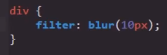
Resultado
Brightness
-
Este valor define la cantidad de brillo que se le aplicara a la imagen, donde "0" es completamete oscura y "1" es el brillo normal de la imagen, se puede aplicar cualqueer otro valor positivo o decimal
Codigo
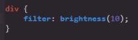
Resultado
En este ejmplo se palica diez(10) veces el briyo normal de la imagen, realmte se puede aplicar el valor que se dese, incluso 100
Contrast
-
Este valor aplica contraste a los colres de la imagen, donde "0" es nada de contraste y "1" es el contraste normal de la imagen, a su vez se puede usar el valor positivo entero o decimal que se desee
Codigo
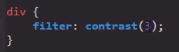
Resultado
En este ejmplo se le da a la imagen un contraste tres (3) veces mayor al original.
Nota: en este valor tambien se puede usar porcentajes, donde "100%" es igual a "1"
Nota: este valor necesita que se defina un color de fonfo para funcionar adecuadamete, ya que su función es generar el contraste entre el cntenido y el fondo.
Drop-shadow
-
Este valor permite aplicar una sombra a aquellas imagenes de fondo transparente, para funcionar reqiere de tres valores en px y que se defina el color de la sombra.
Codigo
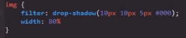
Estos valores en px definen las dimenciones de la sombra
original
Aplicando la propiedad
Una caracteritica de este valor es que podemos aplicarlo varias veces en el mismo llamado para reforzar su efecto, logrando un resultado semejante a esto:
Literalmente copiando y pegando este valor con todos sus parametros dentro de la propiedad se logra este tipo de resultado, en este caso para lograr el efecto anterior se aplico el siguite valor repetidas veces.
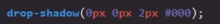
Grayscale
-
Este valor denera la imagen en una escala de grises (blanco y negro), donde "0" es nada de filtro y "1" es blanco y negro
Codigo
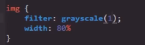
Resultado
Nota: En este valor los numeros mayores a "1" no surten un efecto que los diferencie de este, lo que si genera un efcto es utilizar porcentajes (%) y decimales para definir el valor
Hue-rotate
-
Este valor permite rotar la escala de colores, esta propiedad trabaja con deg (grados) como su unidad numerica, sin embargo tambien acepta radianes y gradianes, sin embargo la medida más reomendable es grados, es decir en base al valor que se introduzca permite cambiar los colores de la imagen.
Codigo
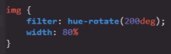
Resultado
Invert
-
Este valor permite invertir los colores, donde "0" son los colores originales y "1" son los colores completamete invertidos, por lo tanto para definir la intencidad de la propiedad se utiliza los numeros decimales entre "0" y "1", tambien se puede utilizar decimales (%) para hacerlo
Codigo
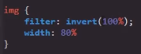
Resultado
Nota: debido a la naturaleza de los colores el valor medio entre "1" y "0" (50% - 0.5) genera una escala grises, ya que el color original mesclado con el mismo color invertido se anulan entre si, del mismo modo que ejm 10-10=0.
Opacity
-
Este valor aplica una transpaencia sobre la imagen, en esta propedad "0" es completamente vicible y "1" es completamente transparente, por lo tanto para definir la intencidad se utilizan decimales o porcentajes.
Codigo
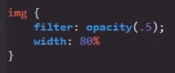
Resultado
Saturate
-
Este valor añade una saturación a la imagen, donde "0" es igual a ninguna saturación y "1" es igual a la saturación original de la imagen, por lo tanto para definir la intencidad se utilizan numeros positivos enteros o decimales o porcentajes.
El efecto de esta propiedad se puede parecer a la de contrast, pero la diferencia entre ambas es que contrast genera el mayor contraste posble entre los colres, mientras que saturate aproxima los colres a su mayor intencidad posible.
Codigo
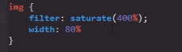
Resultado
En este ejmplo se aplica una saturación de "400%" es ddecir una saturación catro beces mayor a la horiginal, tambien se podria usar el valor "4" para obtener el mismo efecto
Sepia
-
Esta valor aplica el efecto sepia en la imagen, donde "0" es igual a ningun efecto y "1" es igual a compltamete aplicado el efecto, por lo tanto cualqueer valor mayor a "1" no genera ninguna diferencia, por ello en este valor su intencidad se puede definir con el uso de decimales y porcentajes
codigo
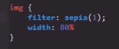
Resultado
Url
-
Esta valor realmente no es abarcado por el curso, sin embargo su fuinción es la permitir incluir filtros propios, si se desea indagar más se puede buscar un tutorial por internet.